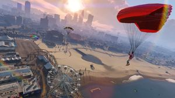

Parachutespringen, zoals de naam al aangeeft, gaat spelers springen uit Maverick helikopters hoog boven de grond en het openen van hun parachutes. Sommige banen zal een Base Jump van een gebouw of een bergtop te betrekken. De spelers moeten dan navigeren hun parachutes door verschillende cirkelvormige checkpoints, vergelijkbaar met lucht races .
Als de spelers gaan door de controlepost in het centrum van het, ontvangen zij de maximale 15 punten. Als ze gaan door ergens anders in de controlepost, krijgen ze slechts 10 punten. Gewoon het raken van de rand van het checkpoint zal 5 punten opleveren. Het missen van de controlepost helemaal worden geen punten voor die bepaalde controlepost geven.
.Wanneer aan de grond, moet de speler gericht om op een doel, bestaande uit blauwe concentrische cirkels die geven ofwel 15, 10, 5, of geen extra punten afhankelijk van hoe dicht bij het midden van het doel ze landen. Het is ook mogelijk om 5 punten afgetrokken om een "faceplant" landing.
Ontbrekende de gronddoel geheel resulteert in een DNF zelfs als de landing overleefbaar.
Wapens in staat tijdens de afdaling afhankelijk matchmaking opties die de taak gastheer gebruikt moeten worden.
In Parachutespringen, het gaat niet om wie de snelste parachutes. Het gaat over wie de meeste punten op het einde. Dit is de reden waarom het beter is voor de spelers om langzaam en gestaag te gaan in plaats van te gaan recht naar beneden, met het oog op een betere nauwkeurigheid te krijgen in het raken van checkpoints. Snelste tijd wordt alleen gebruikt om tie-break spelers met evenveel punten scoort.
Als de speler iets raakt tijdens de wedstrijd en daalt, zullen ze automatisch verliezen.
